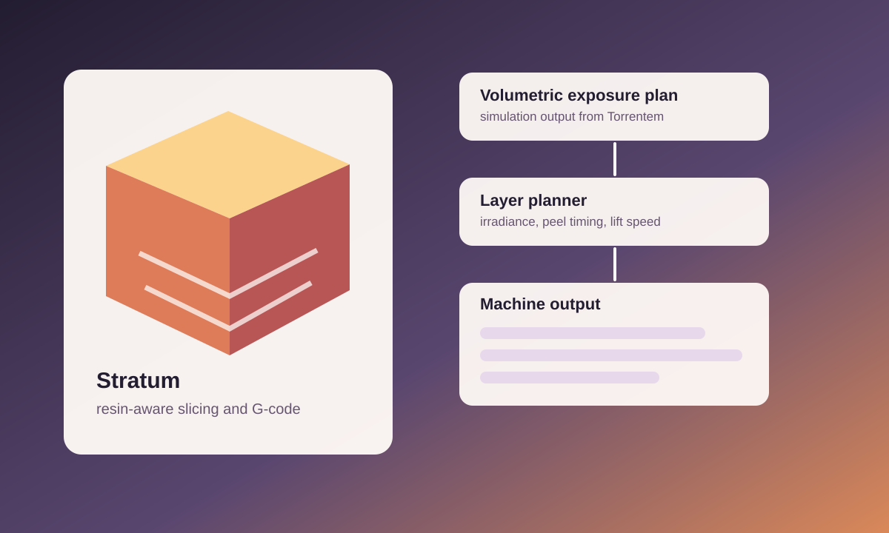

Slice Exposure Plans
Volumetric simulation output is converted into layer-wise exposure maps that can be calibrated for a resin printer.
Photopolymerization / build preparation / G-code
Stratum is a build-preparation and G-code generation toolkit for DLP and SLA photopolymerization printers, tuned to consume volumetric exposure plans exported from Torrentem simulations.

Volumetric simulation output is converted into layer-wise exposure maps that can be calibrated for a resin printer.
Build profiles account for practical constraints such as peel timing, adaptive lift speeds, and oxygen inhibition zones.
An interactive preview renders per-layer irradiance fields so print preparation can be inspected before machine output.
Return to all projects, read related writings, or browse publications.